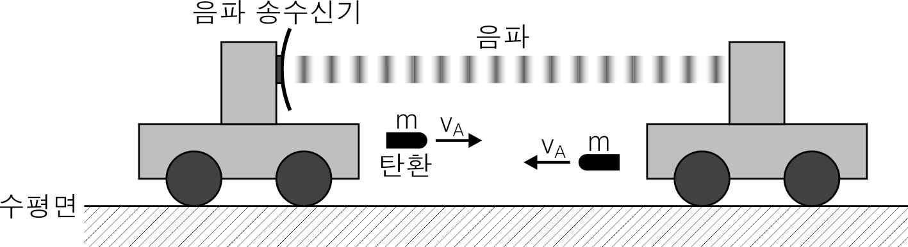

문제 1
서로 마주 보고 있는 두 전차에 각각 질량이 m인 탄환이 하나씩 장착되어 있고, 왼쪽 전차에는 음파 송수신기가 설치되어 있으며, 두 전차의 전체 질량은 서로 같다. 송수신기에서 진동수가 \(f_0\)인 음파를 발생시켜 내보내면, 이 음파는 오른쪽 전차에서 반사된 후 왼쪽 전차로 되돌아오고, 송수신기는 되돌아온 음파의 진동수를 측정한다.
정지 상태의 공기에서의 음파의 속력을 \(v_A\)라 하자. 정지해 있던 두 전차가 동시에 서로를 향해 수평 방향으로 탄환을 발사하였고, 두 탄환은 지면에 대해 정지해 있는 외부 관찰자가 보기에 수평면과 평행하게 속력 \(v_A\)의 등속운동을 하며 날아가 각각 상대 전차에 동시에 박혔다.
탄환이 박힌 후 송수신기에서 측정되는 음파의 진동수가 \(0.64f_0\)라면, 탄환이 박히기 직전에 송수신기에서 측정된 음파의 진동수는 얼마였을까? (전차와 지면 사이의 마찰과 공기저항은 무시하자.) (4점)
